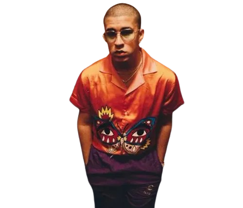

Benito Antonio Martínez Ocasio, known professionally as Bad Bunny, is a Puerto Rican singer, rapper, and songwriter who helped popularize Latin trap and reggaeton around the world.
Bad Bunny gained rapid recognition with hits blending Latin urban rhythms and innovative production — he collaborates widely and is known for genre-bending work and dynamic visuals.
His career includes multiple chart-topping albums and notable tours across global venues, bringing Latin music to mainstream audiences worldwide.
Outside music Bad Bunny is active in social causes and often uses his platform to spotlight community and cultural issues.